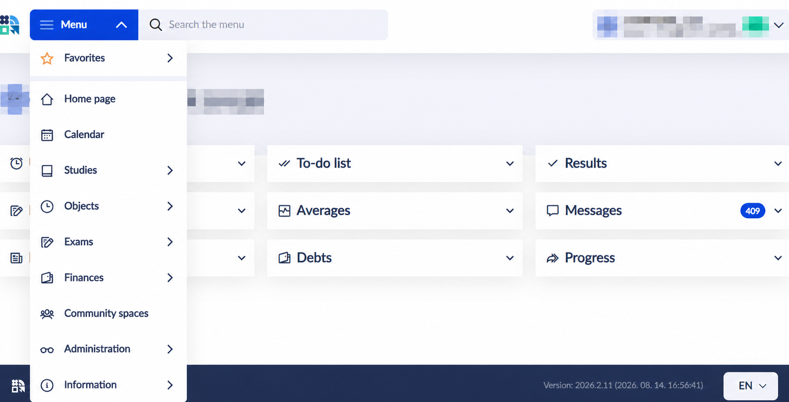

Neptunとは？大学の学務手続きを行うシステム
Neptun（ネプトゥン）は、履修登録、学期登録、試験登録、成績確認、大学からのメッセージ、申請や支払いなどに使われる学務システムです。授業資料・課題を扱うCooSpaceなどとは役割が異なるため、大学の案内に従って両方を確認しましょう。
この記事の画面例はBudapest University of Economics and Business（BUEB／ブダペスト商科大学）のものです。大学・学部・画面のバージョンによりメニューや手順は変わります。
1. 大学から届いたログイン情報を確認する
大学公式サイトから自分の大学のNeptunへアクセスし、大学から案内された識別コードとパスワードでログインします。初回のパスワード設定・変更方法は大学の案内を優先してください。

登録されているメールアドレスを確認し、大学からのメッセージを見逃さないようにします。ログインできない場合は、パスワード再設定方法と大学のStudent Service窓口を確認しましょう。
2. 学期をActiveにする｜履修登録とは別の確認
今学期に学ぶ場合、大学が指定する期間に学期登録・Active statusの手続きを行います。科目を選ぶだけで学期の登録が完了するとは限らないため、登録状態と履修科目の両方を確認してください。
BUEBでは個別の科目登録を始める条件として、該当学期の有効化や未払い料金の解消が案内されています。期限、初年度の手順、奨学金に関する扱いは大学の通知を確認しましょう。
3. カリキュラムを見て、科目とクラスを登録する
推奨カリキュラムを確認し、今学期に必要な科目と前提科目を整理します。同じ科目に複数の時間帯・クラスがある場合は、時間割の重複と定員に注意して選びます。

- Studies：カリキュラムや学修状況などを確認する。
- Subjects：科目・クラス登録などを確認する。画面例では「Objects」と表示されている項目があり、名称はバージョンや言語設定で異なります。
- Exams：試験日程・試験登録を確認する。
- Finances：大学からの請求・支払い項目などを確認する。
- Messages／Information：大学からのお知らせや関連情報を確認する。
科目登録の開始日・時刻は学部や学年で異なります。登録後は、選んだクラスが実際に登録済みになっているか、単位数と曜日・時間が正しいかを確認しましょう。
4. 試験登録と成績も忘れずに確認
科目を履修していても、試験日の登録が別途必要なことがあります。受験条件、登録・取消期限、空き枠を確認して予約し、試験後は成績や教員の署名が反映されているかを確認します。
不明点がある場合は、科目担当教員や大学の学務窓口に問い合わせましょう。画面例だけで、自分の学部の期限や単位取得条件を判断しないことが大切です。
学期開始前のチェック
- ログイン情報と通知先メールを確認する。
- 学期登録・履修登録の開始日と締切を確認する。
- 必要科目、前提科目、クラスの時間割を確認する。
- 未払い項目、大学からのメッセージ、申請の有無を確認する。
- 登録後にActive statusと登録済み科目を確認する。
大学・年度で異なる実際の操作や登録時の混雑は、その大学の現役生に聞いておくと準備しやすくなります。
BUEBの公式案内
現役生に直接聞いてみる
通学や住まい、大学の手続きなど、その大学・都市での実際の状況を知りたい方は現役生に相談できます。
現役生を見る